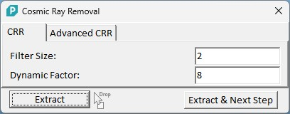
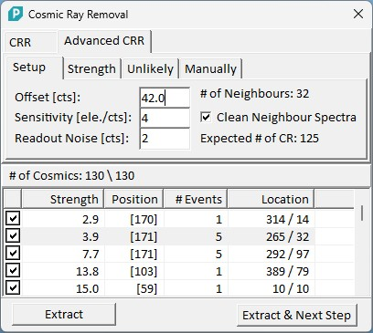
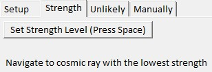
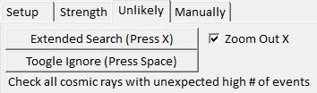
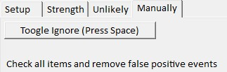
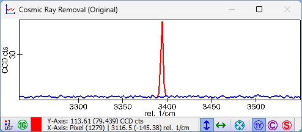
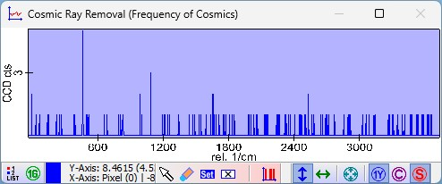

|
|
描述
此对话框允许从光谱数据集中去除宇宙射线。宇宙射线去除应在任何其他光谱数据分析之前进行（特别是对于光谱图像）。
输入与结果
输入：
一个图谱对象（单光谱、线光谱或图像光谱）。高级 CRR 仅适用于图像光谱。
结果：
一个宇宙射线去除后的图谱数据对象。高级 CRR 还会额外提取宇宙射线图。
用户界面
CRR（简单宇宙射线去除）
如果选择 CRR 选项卡，将使用简单的排序阈值算法从图谱中全自动去除宇宙射线。

滤波器大小：
宇宙射线检测算法的滤波器大小。总窗口大小为 2*<滤波器大小> + 1。
动态因子：
此因子更改宇宙射线检测算法的灵敏度（较小的值意味着更高的灵敏度）。
高级 CRR
高级 CRR 显示检测到的宇宙射线列表，并引导用户通过多个步骤，用户可以检查并决定检测到的宇宙射线是否被去除。该对话框使用高级算法，使用相邻光谱检测宇宙射线，从而更好地检测例如击中多个 CCD 列的宽宇宙射线。
按照选项卡控件的顺序处理所有步骤将获得最佳结果。
只能使用原始数据集，不能使用背景扣除后的数据。
只能使用图像光谱数据对象
不能使用在 EMCCD 模式下测量的光谱
设置
在进行分析之前，请检查并设置正确的偏移量、灵敏度和读出噪声。在此步骤中，可以在"宇宙射线频率"图谱查看器中更改掩模，以通过光谱位置过滤宇宙射线。

偏移量（浮点编辑框）
定义数据的偏移量（+- 10 counts 是可接受的）。对话框打开时自动估计该值。
灵敏度（浮点编辑框）
定义 CCD 芯片的灵敏度。每个 CCD 型号的典型值见下表。
读出噪声（浮点编辑框）
定义 CCD 芯片的读出噪声。每个 CCD 型号的典型值见下表。
型号 | 模式 | 灵敏度 [ele./cts] | 读出噪声 [cts] | 水平移位速度 [MHz] | 前置放大器 |
DR324 FI | 低噪声 | 2.3 | 2.5 | 0.035 | 4 |
高动态范围（快速） | 9 | 3 | 1.48 | 1 | |
DR316 LDC-DD | 低噪声 | 1.5 | 3 | 0.13 | 4 |
高动态范围（快速） | 6 | 1.5 | 1.48 | 1 | |
DV401A FI | 低噪声 | 2 | 1.5 | 0.033 | 1 |
高动态范围（快速） | 9 | 1 | 0.1 | 1.5 - 1.7 | |
DV401A BVF | 低噪声 | 2 | 3.5 | 0.033 | 1 |
高动态范围（快速） | 9 | 1.3 | 0.1 | 1.5 - 1.7 | |
DU401A FI | 低噪声 | 2.5 | 1.2 | 0.033 | 1 |
高动态范围（快速） | 11 | 0.8 | 0.1 | 1.5 - 1.7 | |
DU401A BVF | 低噪声 | 2.5 | 2.8 | 0.033 | 1 |
高动态范围（快速） | 11 | 1.1 | 0.1 | 1.5 - 1.7 | |
DU401A BR-DD | 低噪声 | 2.5 | 2 | 0.033 | 1 |
高动态范围（快速） | 12 | 0.8 | 0.1 | 1.5 - 1.7 | |
<XX>420A OE | 低噪声 | 2 | 2 | 0.033 | 1 |
高动态范围（快速） | 9 | 1 | 0.1 | 1.5 - 1.7 | |
<XX>420A BU, BU2, BVF | 低噪声 | 2 | 3 | 0.033 | 1 |
高动态范围（快速） | 9 | 1.1 | 0.1 | 1.5 - 1.7 | |
<XX>420A BEX2-DD, BR-DD | 低噪声 | 2.5 | 1.6 | 0.033 | 1 |
高动态范围（快速） | 11 | 0.9 | 0.1 | 1.5 - 1.7 | |
DU970P BVF, FI, UV, UVB | 低噪声 | 0.8 | 3.5 | 0.05 | 4 |
高动态范围 | 3 | 0.9 | 0.05 | 1 | |
高动态范围（快速） | 3 | 2.8 | 3 | 1 | |
电子倍增 | CRR 不可用 | ||||
DU49<X>A | 高灵敏度 | CRR 不可用 | |||
高动态范围 | CRR 不可用 |
邻域数量
显示在同一光谱位置有宇宙射线的相邻光谱的数量。由于相邻光谱的插值（TrueScan 功能），在未使用步进栅格的图像和大面积扫描中，相邻宇宙射线是正常的。
清理相邻光谱（复选框）
如果勾选，相邻宇宙射线将被自动校正。对于步进栅格扫描应关闭此功能。
预期宇宙射线数量
显示预期的宇宙射线数量。这是使用统计分析计算的，应与找到的宇宙射线数量处于同一数量级。如果找到的宇宙射线数量远多于预期数量（约 2 倍），可能表明存在大量误报检测。
宇宙射线列表
显示所有检测到的宇宙射线及其强度、光谱位置、事件数（同一位置的宇宙射线数量）和图像中的位置（像素位置 X / Y）。
强度

如果选择此选项卡，宇宙射线列表将按强度排序。这允许取消选择宇宙射线信号过弱的误报宇宙射线。如果设置正确，第一个真正的宇宙射线强度应约为 6。
设置强度水平
请查看宇宙射线并选择第一个真正的宇宙射线，然后按下"设置强度水平"。这将取消选择所有强度低于所选宇宙射线的宇宙射线。
不可能

如果选择此选项卡，宇宙射线列表将按同一光谱位置的宇宙射线数量排序，然后按光谱位置本身排序。在多个不同光谱/测量点的相同光谱位置发生的宇宙射线不太可能是真正的宇宙射线。请查看所有事件数大于 1 的宇宙射线。如果在相同光谱位置的不同光谱具有类似的拉曼峰，该宇宙射线可能是误报。
扩展搜索
通过将选定的宇宙射线（以及相同光谱位置的所有宇宙射线）与数据集中的所有其他光谱进行比较来计算宇宙射线检测，以查找是否有具有该宇宙射线位置的拉曼峰的光谱。如果存在其他在此位置具有拉曼峰的光谱，该光谱位置的宇宙射线将被自动取消选择。
缩小 X
如果关闭，预览图谱查看器将缩放到宇宙射线的光谱位置，以便更仔细地查看宇宙射线本身。如果打开，您可以看到整个光谱，以便比较在相同光谱位置具有宇宙射线的不同光谱的拉曼峰。如果光谱看起来相似，则宇宙射线可能是误报。
切换忽略
按下以切换所选宇宙射线的忽略状态。
手动

在去除所有太弱和所有不可能的宇宙射线后，您应该查看每个剩余的宇宙射线以确定是否仍有误报。例如，对于整个数据集中仅出现一次的拉曼峰，可能会出现这种情况。
预览窗口
宇宙射线预览

显示当前选定宇宙射线的原始光谱（红色）和宇宙射线去除后的光谱（蓝色）。
宇宙射线频率

显示所有找到的宇宙射线的频率，即每个光谱位置找到了多少宇宙射线。如果在同一光谱位置找到多个宇宙射线，这可能是误报的指标。